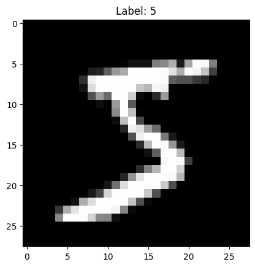

Overview
This project explores digit classification using the MNIST dataset. The objective is to classify handwritten digits (0–9) using Support Vector Machines (SVM) with different kernels and hyperparameter tuning strategies. The results demonstrate the importance of kernel selection and hyperparameter optimization for improving model accuracy.
Tools and Libraries
The project utilizes the following tools:
- Scikit-learn: For building and training SVM models.
- NumPy: For numerical computation.
- Matplotlib: For data visualization.
- Python: As the programming language for implementing the models.
Dataset Description
The MNIST dataset contains 70,000 images of handwritten digits, each represented as a 28x28 grayscale image:
- Features: Flattened 784-pixel intensity values for each image.
- Labels: Digits from 0 to 9.
Here is a sample image from the dataset:
Methodology
The project followed these steps:
- Loaded and normalized the MNIST dataset.
- Split the data into training (6000 samples) and testing (1000 samples) subsets.
- Trained SVM models with:
- Linear kernel: Achieved an accuracy of 91.8%.
- RBF kernel (default parameters): Achieved an accuracy of 94.8%.
- Optimized hyperparameters using:
- GridSearchCV
- RandomizedSearchCV
- Compared the performance and computational cost of both search methods.
Results
The results highlight the impact of kernel choice and hyperparameter tuning:
- Linear Kernel: Simple but less accurate (91.8%).
- RBF Kernel: Higher accuracy (94.8%) with default parameters.
- Hyperparameter Tuning: Further improvements using GridSearchCV and RandomizedSearchCV, but GridSearch required significantly more time.
Visualization
The following is an example of a correctly classified digit using the model:

Insights
The project provided the following insights:
- RBF kernels significantly outperform linear kernels for this dataset.
- Hyperparameter tuning can improve accuracy, but computational cost must be considered.
- RandomizedSearchCV is faster than GridSearchCV for large parameter grids.
Link to Code
Explore the complete code on GitHub.